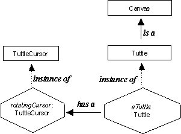
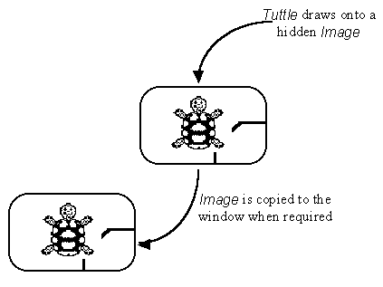

The instance diagram for the Tuttle class is presented in Figure 4.5. It shows that every tuttle is an instance is of the Tuttle class which extends the Canvas class. Each tuttle also has a rotatingCursor which is an instance of the TuttleCursor class.

Figure 4.5 Tuttle instance diagram.
The Doodle applet from Chapter 2 suffered from one major failure. When the applet's window was covered by another window and subsequently uncovered any drawings on the window were lost and a blank window was redisplayed. This behavior would be unacceptable for the Tuttle class and a technique known as double buffering is used to provide the required save under capability. It is accomplished by not drawing directly onto the component's window but upon a hidden Image and copying it to the window whenever required. This technique is illustrated in Figure 4.6.

Figure 4.6 Double buffering of the Tuttle image.
Image is a Java AWT class which effectively provides a 'window' in the computer's memory where an image can be stored or manipulated. The contents of an Image can be obtained by loading a graphics image file, for example a *.gif (Graphics Image Format) file from disk or from the Internet. Alternatively the contents of an Image can be obtained by drawing onto it using a Graphics context constructed for the purpose. Both of these techniques will be described below.
The context clause of the Tuttle.java source code file and the declaration of its data attributes are as follows.
0001 // Filename Tuttle.java.
0002 // Providing tuttle (turtle) graphics capabilities by
0003 // extending the Canvas class.
0004 //
0005 // Written for the Java Interface Book Chapter 4.
0006 // Fintan Culwin, v 0.2, August 1997.
0007
0008
0009 package Tuttles;
0010
0011 import java.awt.*;
0012 import java.applet.*;
0013 import java.awt.image.*;
0014 import java.lang.Math;
0015
0016 import Tuttles.TuttleCursor;
0017
0018
0019 public class Tuttle extends Canvas {
0020
0021 private static final int SCREEN_STEPS = 500;
0022
0023 private Image tuttleImage;
0024 private Image theCursor;
0025 private Graphics tuttleGraphics;
0026 private TuttleCursor rotatingCursor;
0027 private Applet itsApplet;
0028
0029 private int xLocation = 0;
0030 private int yLocation = 0;
0031 private int direction = 0; // The tuttle's virtual location.
0032
0033 private int screenX = 0;
0034 private int screenY = 0; // The tuttle's screen location.
0035
0036 private int screenWidth;
0037 private int screenHeight; // The physical dimensions of the screen area.
0038
0039 private double horizontalScale;
0040 private double verticalScale; // Virtual to physical conversion factors.
0041
0042 private boolean penDown = true;
0043 private Color currentForeground = Color.blue;
0044 private Color currentBackground = Color.yellow;
The context establishes that this class is contained within the Tuttles package and that it makes use of the TuttleCursor class from the same package. The constant SCREEN_STEPS is used to define the virtual distance between the center of the screen and the edge. The tuttleImage attribute is the Image upon which all drawing will take place in order to implement double buffering and the tuttleGraphics attribute will be used to draw upon it. The theCursor and rotatingCursor attributes are used to support the cursor and will be described below, as will the use made of the itsApplet Applet attribute.
Design Advice
Drawing methods should always use a virtual frame of reference and translate to a physical frame of reference only when absolutely required.
The xLocation, yLocation and direction attributes define the
location of the tuttle within the virtual space. The screenX and screenY attributes record the position
of the tuttle on the physical screen, whose dimensions are stored
in screenWidth and screenHeight. The horizontalScale and verticalScale store the
conversion factors between the virtual and physical screen. The currentForeground and currentBackground attributes
store the colors to be used and penDown the state of the
tuttle's pen. It is the responsibility of the constructor and addNotify() methods to ensure
that all of these attributes are initialized into a well defined
state, as follows.
0046 public Tuttle( Applet applet, int width, int height) {
0047 this.setSize( width, height);
0048 itsApplet = applet;
0049 } // End Tuttle constructor.
0050
0051
0052 public void addNotify() {
0053 super.addNotify();
0054 this.initialiseTuttle();
0055 this.initialiseCursor();
0056 } // End addNotify.
0057
0058
0059 private void initialiseTuttle() {
0060 screenWidth = this.getSize().width;
0061 screenHeight = this.getSize().height;
0062 tuttleImage = this.createImage( screenWidth, screenHeight);
0063 tuttleGraphics = tuttleImage.getGraphics();
0064 tuttleGraphics.setColor( currentBackground);
0065 tuttleGraphics.fillRect( 0, 0, screenWidth, screenHeight);
0066 tuttleGraphics.setColor( currentForeground);
0067 tuttleGraphics.translate( screenWidth /2, screenHeight /2);
0068 horizontalScale = ((double) screenWidth / (double) (SCREEN_STEPS * 2));
0069 verticalScale = ((double) screenHeight / (double) (SCREEN_STEPS * 2));
0070 } // End initialiseTuttle.
The constructor merely sets the size of the component to the dimensions supplied and stores the identity of its applet. The remaining initialization of the Tuttle is deferred until the addNotify() method is called, after its component peer has been created. The addNotify() method first calls its parent addNotify() method and then calls the private initialiseTuttle() and initialiseCursor() methods.
As the component's window has been created the initialiseTuttle() method can commence, on lines 0060 and 0061, by determining the size of the physical drawing area. It would not be safe for the Tuttle simply to assume that the setSize() method, called in its constructor, had obtained the dimensions requested as layout negotiations may have given it a different size. Once the size of the screen window is known, on line 0062, the tuttleImage is created with exactly the same sizes using the Component createImage() method.
Having created an Image its getGraphics() method is used, on line 0063, to obtain a context for drawing onto it. Lines 0064 to 0066 then ensure that the image is cleared to the background color, by drawing a filled rectangle of the background color onto it, and the context is prepared for drawing in the foreground color. Line 0067 translates the origin (0, 0) from the top left hand corner of the Image to the center of the Image, for the convenience of the drawing methods. Finally the scaling factors, horizontalScale and verticalScale, are initialized to allow conversion between the virtual and physical locations on the screen. The implementation of the initialiseCursor() method will be considered below.
The contents of the tuttleImage need to be copied to the Tuttle's window whenever its paint() method is called in order to provide double buffering. A component's paint() method is always called by Java from the update() method, whose default implementation, in the Component class, will first clear the visible window before indirecting to the paint() method. If the update() method were not overridden in the Tuttle class this would cause the window to flicker as it is first cleared and immediately afterwards has the TuttleImage copied on to it. To avoid this behavior an overriding update() method is declared in the Tuttle class as an method which only calls the Tuttle's paint() method, without first clearing the visisble window.
0110 public void update( Graphics systemContext) {
0111 this.paint( systemContext);
0112 } // End update.
0113
0114 public void paint( Graphics systemContext) {
0115
0116 int cursorCenterX;
0117 int cursorCenterY;
0118
0119 systemContext.drawImage( tuttleImage, 0, 0, this);
0120 cursorCenterX = ((screenWidth /2) + screenX) -
0121 (theCursor.getWidth( this) /2);
0122 cursorCenterY = ((screenHeight /2) + screenY) -
0123 (theCursor.getHeight( this) /2);
0124 systemContext.drawImage( theCursor,
0125 cursorCenterX,
0126 cursorCenterY,
0127 this);
0128 } // End paint.
The paint() method commences, on line 0119, by copying the tuttleImage from memory into the Tuttle's visible window using the systemContext drawImage() method. The four arguments to his call indicate the Image to be copied, the location on the destination to place its top left corner; the last formal argument requires an ImageObserver to be supplied.
Java was intended from the outset for use on the Internet and the latency inherent in this environment was taken into account during its implementation. In particular it was designed so that the presentation of information would not be unnecessarily impeded by delays waiting for image, or other multimedia resources, to be downloaded or otherwise manipulated. Accordingly many operations on Images, and other comparable multimedia resources, takes place on a different thread from the main thread of control in Java programs. In order to allow synchronization of the separate threads to be achieved the ImageObserver Interface is supplied. This Interface mandates methods which allow the main thread to determine from the subordinate thread the status of various operations, for example the loading or other time consuming manipulation, of an Image.
As the Component class implements the ImageObserver interface any AWT component can be supplied where the API requires an ImageObserver as a formal argument. In the call of the drawImage() method, on line 0119, currently being considered; the actual argument supplied for the fourth argument is the identity of the current Tuttle instance (this). The use of ImageObservers, including techniques for synchronization, will be continued throughout this chapter.
The Tuttle paint() method continues, on lines 0120 to 0127, by the drawing of theCursor onto the window, centered at the Tuttle's current ( screenX, screenY) location. The overall effect of the paint() method is to show on the Tuttle's window the contents of the tuttleImage and then superimpose upon it the cursor, which is maintained in the theCursor Image. The only method which actually draws onto the tuttleImage is the forward() method whose implementation is as follows.
0132 public void forward( int steps) {
0133
0134 int possibleNewX;
0135 int possibleNewY;
0136 int localDegrees = (direction + 270 ) % 360;
0137 double radians = (((double) localDegrees) / 180.0) * Math.PI;
0138
0139 possibleNewX = xLocation +
0140 (int) (Math.cos( radians) * (double) steps);
0141 possibleNewY = yLocation +
0142 (int) (Math.sin( radians) * (double) steps);
0143
0144 if ( (possibleNewX >= -SCREEN_STEPS) && (possibleNewX <= SCREEN_STEPS) &&
0145 (possibleNewY >= -SCREEN_STEPS) && (possibleNewY <= SCREEN_STEPS) ){
0146
0147 int NewX = (int) ( ((double) possibleNewX) * horizontalScale);
0148 int NewY = (int) ( ((double) possibleNewY) * verticalScale);
0149
0150 if ( penDown) {
0151 tuttleGraphics.drawLine( screenX, screenY, NewX, NewY);
0152 } // End if.
0153
0154 xLocation = possibleNewX;
0155 yLocation = possibleNewY;
0156 screenX = NewX;
0157 screenY = NewY;
0158 repaint();
0159 } // End if.
0160 } // End forward.
0161
0162 public void backward( int steps) {
0163 this.forward( -steps);
0164 } // End backward.
The purpose of this method is to move the Tuttle from its current location by the number of steps specified in its current direction, providing this will not take it outside the bounds of the screen, and leaving a trail if the penDown flag is set. The Tuttle is constructed so that its zero degree direction is in the 12-o'clock position pointing to the top of the window. However, the Graphics zero degree direction is in the 3-o'clock position pointing to the right of the window. The declaration of the local variable localDegrees, on line 0136, converts the Tuttle's direction into an equivalent Graphics direction and then line 0137 then expresses this value in radians rather than degrees.
The method itself commences, on lines 0139 to 0142, with the calculation of the possible new virtual location; using the appropriate trigonometric functions from the Math class. The if structure which follows is then ensures that the new location is within the allowed area. If so the newX and newY variables, declared local to the if structure, are initialized to the new screen location and, if the pen is down, a line is drawn from the currently recorded screen location to the new location. As the Tuttle is now known to have moved, on lines 0154 to 0157 the attributes which record its virtual and physical location are updated. The final step is to call the repaint() method which will, in due course, cause the Tuttle's update() and hence it's paint() methods to be called making any new line drawn visible to the user and moving theCursor.
The backward() method, on lines 0162 to 0164, is implemented as a call of the forward() method with its argument negated. For example moving backwards 100 steps is the same as moving forwards -100 steps. The implementation of the penUp() and penDown() methods is straightforward, manipulating the encapsulated penDown attribute, as follows.
0167 public void setPenUp() {
0168 penDown = false;
0169 } // End setPenUp.
0170
0171 public void setPenDown() {
0172 penDown = true;
0173 } // End setPenDown.
The implementation of the turnRight() and turnLeft() methods are as follows.
0177 public void turnRight( int degrees) {
0178 direction += degrees;
0179 while ( direction < 0) {
0180 direction += 360;
0181 } // End while.
0182 direction %= 360;
0183 theCursor = rotatingCursor.rotate( direction);
0184 repaint();
0185 } // End turnRight.
0186
0187 public void turnLeft( int degrees) {
0188 turnRight( -degrees);
0189 } // End turnLeft.
The turnLeft() method is implemented as a call of the turnRight() method passing the negated value of its argument. For example turning left 30o is the same as turning right -30o. The first part of the turnRight() method is to add the number of degrees to turn to the current direction. As a left turn is implemented as a negative right turn, the value of direction may become negative so the loop on lines 0179 to 0181 ensures that an equivalent positive value in the range 0 to 359 is obtained. Likewise a right turn may take the value of direction above 359 so the modular division on line 0182 constrains it to the equivalent 0 to 359 value. On line 0183 theCursor is recreated to reflect the new direction and finally the repaint() method is called to ensure that the new cursor is visible to the user.
The implementation of the clearTuttleArea(), resetTuttle() and clearAndReset() methods are as follows.
0193 public void clearTuttleArea() {
0194 tuttleGraphics.setColor( currentBackground);
0195 tuttleGraphics.fillRect( -( screenWidth/2),
0196 -( screenHeight/2),
0197 screenWidth, screenHeight);
0198 tuttleGraphics.setColor( currentForeground);
0199 this.repaint();
0200 } // End clearTuttleArea.
0201
0202 public void resetTuttle() {
0203 xLocation = 0;
0204 yLocation = 0;
0205 screenX = 0;
0206 screenY = 0;
0207 direction = 0;
0208 theCursor = rotatingCursor.rotate( direction);
0209 this.repaint();
0210 } // End resetTuttle.
0211
0212 public void clearAndReset() {
0213 this.resetTuttle();
0214 this.clearTuttleArea();
0215 } // End clearAndReset;
On lines 0194 to 0198, the Tuttle area is cleared by filling it with a solid rectangle of the currentBackground color. As the tuttleGraphics context is used for this and as its origin has been transposed to the center of the Image, the upper left hand corner of the rectangle has be re-transposed to the upper left corner of the image. When the context has had its drawing color restored to the currentForeground color, the Tuttle's repaint() method is called to make the cleared image visible.
The resetTuttle() method resets the appropriate Tuttle attributes and then creates a new cursor, as the direction to be indicated by it may have changed, and repaints the image onto the screen. The clearAndReset() method is implemented as calls of the resetTuttle() and clearTuttleArea() methods.
The setForeground() method stores the current color, changes the current color of the tuttleGraphics context, changes the color of the of the rotatingCursor instance and obtains a new cursor, before finally calling the repaint() method to show the new cursor.
0219 public void setForeground( Color newColor) {
0220 currentForeground = newColor;
0221 tuttleGraphics.setColor( currentForeground);
0222 rotatingCursor.setCursorColor( newColor);
0223 theCursor = rotatingCursor.rotate( direction);
0224 this.repaint();
0225 } // End setForeground.
The implementation of the setBackground() method is more complex and will be considered when the TuttleCursor class is considered below. The final method of the Tuttle class is the getDetails() method whose implementation is as follows.
0288 public String getDetails() {
0289
0290 StringBuffer buffer = new StringBuffer();
0291
0292 buffer.append( "x : " + xLocation +
0293 " y : " + (yLocation * -1) +
0294 " d : " + direction);
0295 if ( penDown) {
0296 buffer.append( " pen down");
0297 } else {
0298 buffer.append( " pen up");
0299 } // End if.
0300 return buffer.toString();
0301 } // End getDetails.
On line 0293 the yLocation value has to be multiplied by -1 as, in the Graphics frame of reference, y values increase down the area whilst they increase up the area in the Tuttle's frame of reference, as shown in Figure 4.3. Thus, when the Tuttle is above the midpoint of the screen it will have a negative Graphics value which has to be reported as the equivalent positive value by the Tuttle.